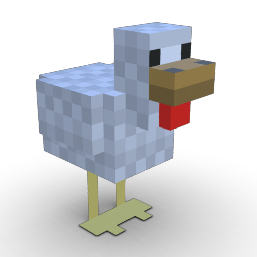
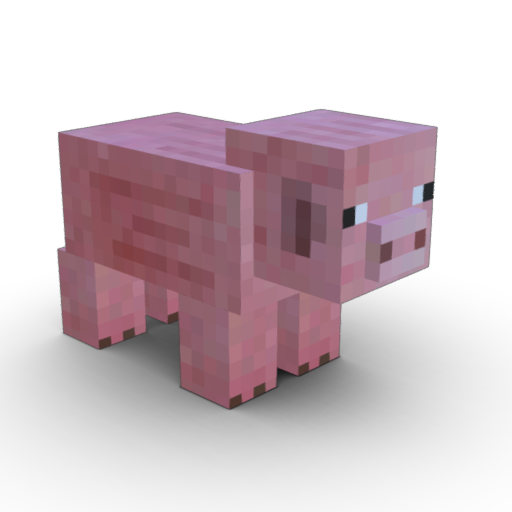
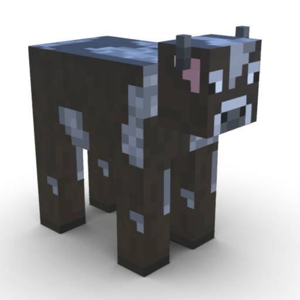

01
Audit
Understand practices, data and needs.

+140 million poultry dead or culled last year [1]

+$140 billion in losses across China in 2019 (~1% of GDP). [6] [2]

Up to $21bn/year in FMD-related production losses and control costs in endemic regions [5]
WOAH reports that around 20% of assessed countries have declining veterinary capacity [1]
Nosotrack provides a complete analytical approach to outbreak response, enabling faster, more targeted and less costly interventions in three steps:
Integrate: bring animal health records, animal and group movements, sequencing and contacts between farms into a single engine.
Reconstruct: Bayesian inference estimates transmission chains, likely sources and the animals, groups or farms most at risk.
Intervene: an AI co-pilot evaluates control scenarios in seconds and ranks them by their ability to contain the outbreak, their cost and their operational impact.
Understand practices, data and needs.
Test Nosotrack in representative scenarios using synthetic or historical data.
Integrate Nosotrack into your biosecurity systems.